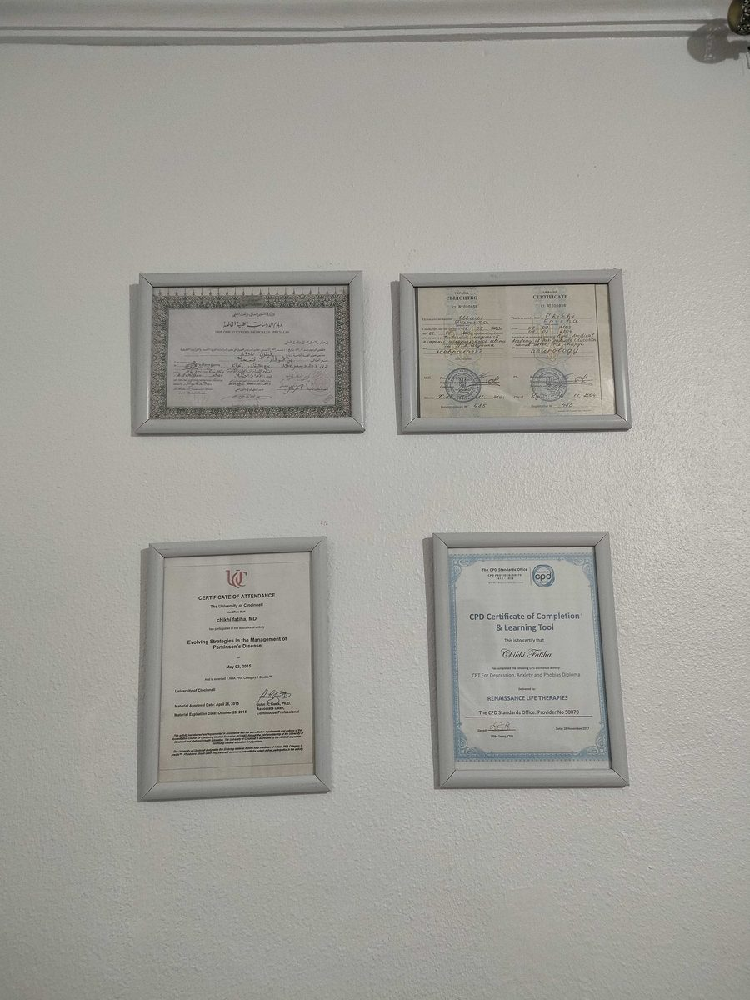

المسار
المسار المهني
الدكتورة ف. شيخي بن قوقام — الطب العصبي النفسي، العلاج النفسي والاسترخاء العلاجي. تمارس حاليا كطبيبة أعصاب ونفسية ومعالجة نفسية في عيادتها الخاصة بالدرارية.
الشهادات
التكوين
شهادة في طب الأعصاب
جامعة الطب بكييف، أوكرانيا
شهادة الدراسات الطبية المتخصصة في الطب النفسي
جامعة الطب بالجزائر
دكتوراه في الطب
جامعة الطب بالجزائر
المسار المهني
الخبرة المهنية
عملت في المؤسسة الاستشفائية المتخصصة في الطب النفسي بالشراقة، قبل أن أنضم إلى عيادة جماعية (طب الأعصاب، الطب النفسي، جراحة الأعصاب) بالرويبة.
طبيبة أعصاب ونفسية، معالجة نفسية
عيادة خاصة، الدرارية
طبيبة أعصاب ونفسية، معالجة نفسية
عيادة جماعية (الطب العصبي النفسي – جراحة الأعصاب)، الرويبة
أخصائية مساعدة في الطب النفسي
المؤسسة الاستشفائية المتخصصة في الطب النفسي بالشراقة
طبيبة مقيمة في الطب النفسي
المؤسسة الاستشفائية المتخصصة في الطب النفسي بالقبة
التكوين المستمر
الشهادات والجمعيات العلمية
الشهادات
- معالجة ممارسة بالتنويم الإيحائي — Psynapse (معتمدة من FFHTB)، 2021
- شهادة في الاسترخاء العلاجي — المؤسسة الاستشفائية المتخصصة بالشراقة، 1997
- شهادة في العلاجات المعرفية السلوكية المطبقة على الاكتئاب والرهاب والقلق — Renaissance Life Therapies (Libby Seery)، نوفمبر 2017
- مدخل إلى التنويم الإيحائي الإريكسوني — البروفيسور ف. كاشا، المؤسسة الاستشفائية المتخصصة بالشراقة، 2017
- Hypnotherapy Practitioner Diploma — Kain Ramsey (Academy of Modern Applied Psychology) و Steven Burns، المملكة المتحدة
- Hypnosis Induction Mastery — Steven Burns، المملكة المتحدة
- Ericksonian Hypnosis — Daniel Johns، المملكة المتحدة
الجمعيات العلمية
- عضو في الجمعية الجزائرية للطب النفسي (SAP)
- عضو في الجمعية الجزائرية للأطباء النفسيين الممارسين في القطاع الخاص (AAPEP)

احجزوا موعدا
يمكنكم الوثوق في سنوات خبرتها الطويلة في التكفل بالأشخاص الذين يعانون نفسيا أو ذهنيا.